来源：https://xxsp96u00k.feishu.cn/docx/V43xdo3yXoVDEyx7YGIcud8KnEh
RVC 项目是 B 站 UP 主花儿不哭开发的开源项目，同时 RVC 对电脑配置的要求要比 SVC 低很多，可以愉快的玩耍。
RVC 可以根据你的选择的模型进行实时变声【一般有几十到几百毫秒的的延迟，延迟决定因素有很多，比如电脑配置、你设置的 RVC 配置参数】
项目链接：https://github.com/RVC-Project/Retrieval-based-Voice-Conversion-WebUI
例子：
RVC 对电脑要求稍微低一些，1、显卡要求 GTX750Ti 以上即可，最好是 RTX 显卡【暂时不支持 N 卡】；2、CPU 越新越好；3、最好使用声卡麦克风【要求不高耳机就可以】
花儿的整合包：链接：https://pan.baidu.com/s/1OUozYzYCSQ8vtqx1YppJmQ?pwd=nn13 提取码：nn13
入梦的整合包：链接：https://pan.baidu.com/s/1wjKVBC3SeOGRlxYBXEQrmw?pwd=2t5x 提取码：2t5x
下载完成后直接解压即可【安装路径不可以有中文】
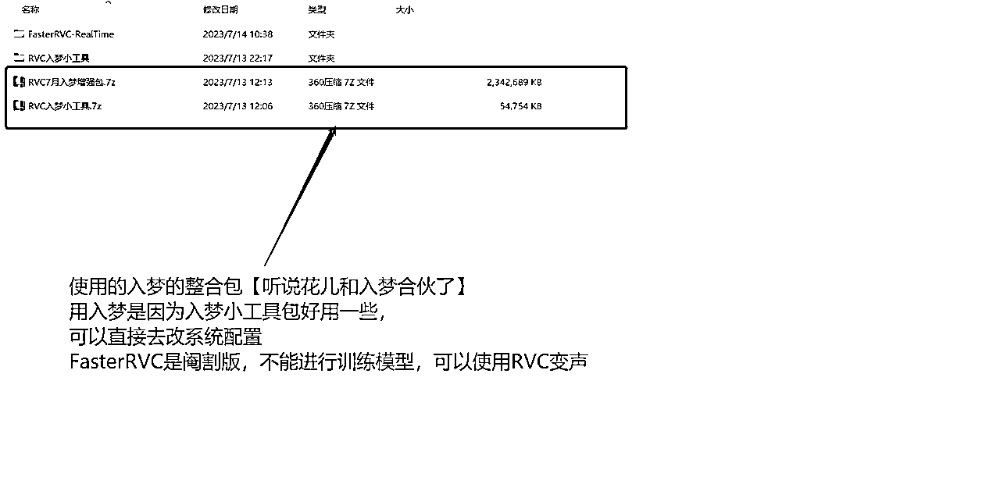
选择【RVCAL 变声器】打开应用
声源——RVC——虚拟声卡【也可以用声卡】——硬件
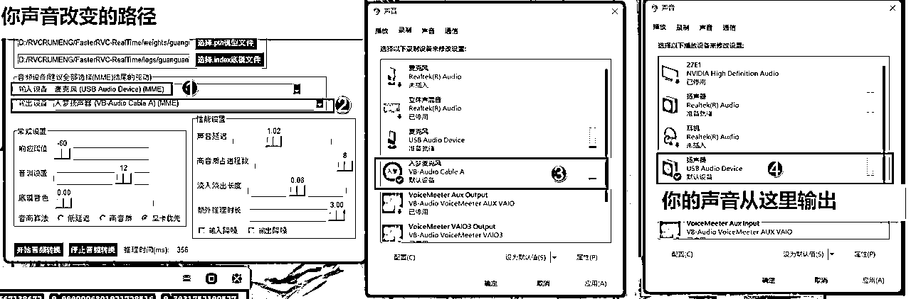
第一步：
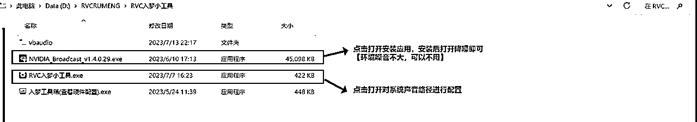
第二步：
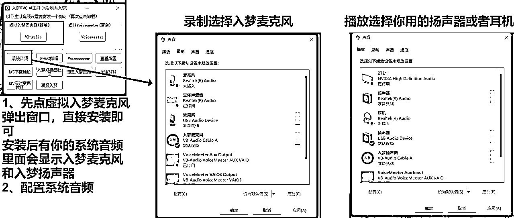
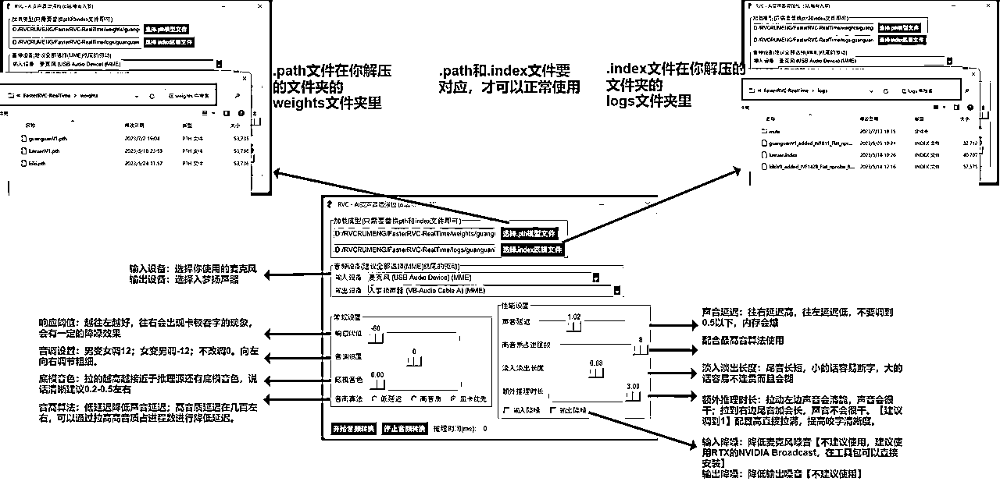
配置要素：
【建议除了音调其他的没必要改】
配置常见问题：
1、输入设备、输出设备：选择设备时结尾一定要是 MME 才可以使用
2、播放和录制设备的格式要保持一致
你用的麦克风和扬声器、入梦扬声器和入梦麦克风，这四个要保持格式一致【44100 或 48000 选一个保持统一即可】
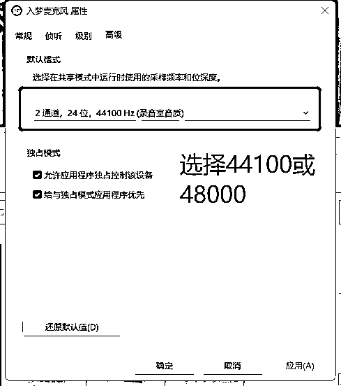
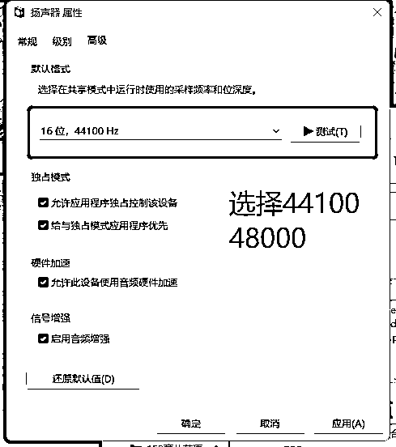
3、想要听自己的变声后的声音可以把侦听勾选上
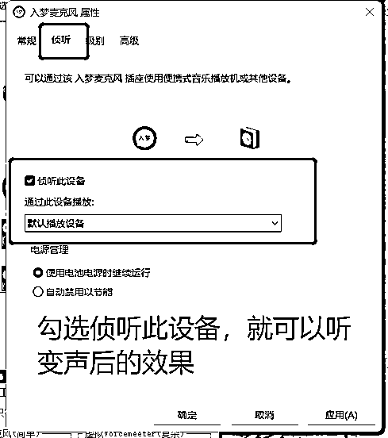

电脑配置要求：>=四核 CPU；>=GTX1060 以上的 N 卡
若音源有较大的噪音【背景音、伴奏之类的】，需要先把音源处理干净，直接使用整合包的内置插件即可。
第一步：选择路径
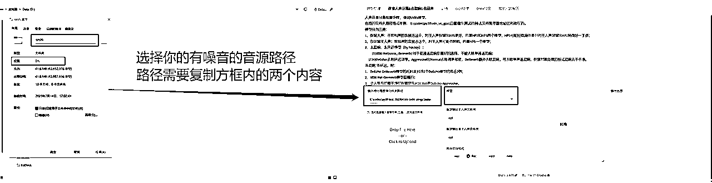
第二部：选择处理模型
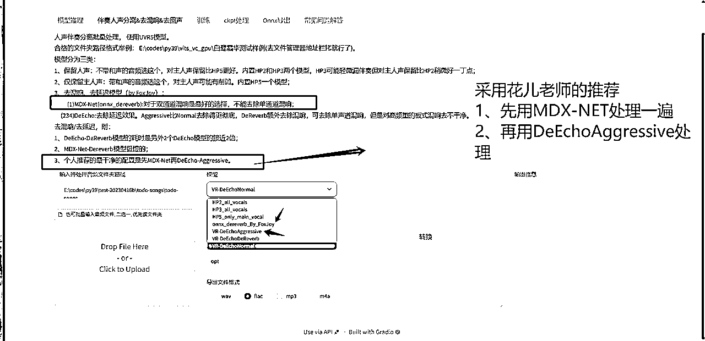
第三步：选择输出路径
第一次处理完，选择第一个文件夹
第二次处理完，选择第二个文件夹
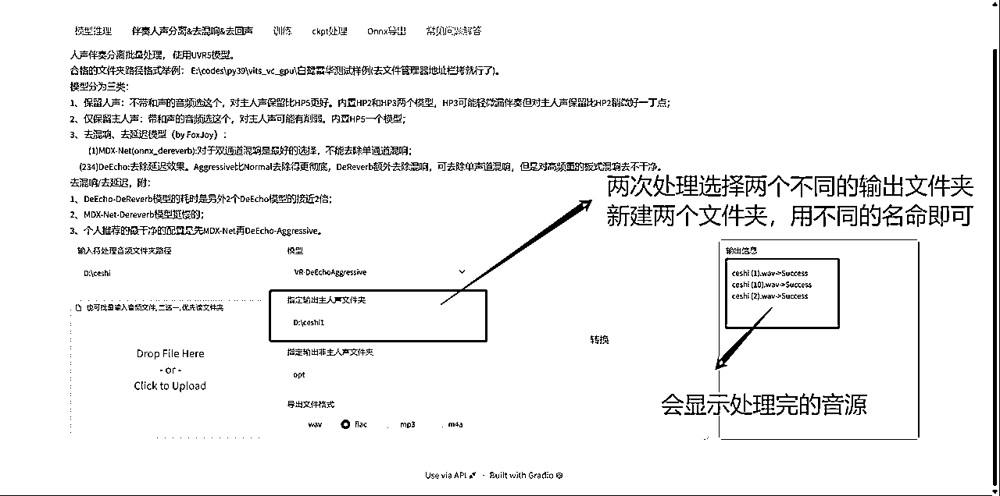
把第二次处理的文件找到，并记录文件夹的位置【是文件夹的位置，不是音频的位置】
第一步：设置训练参数
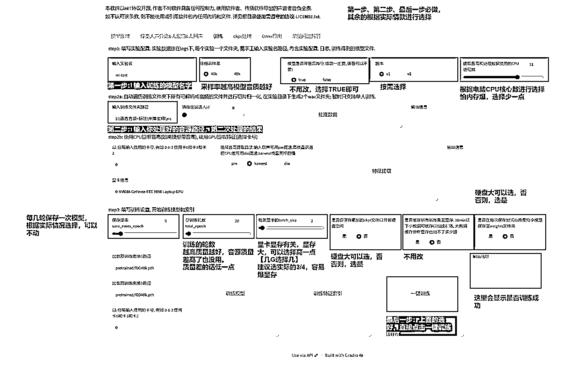
第二步：查看训练进程
点击一键训练后，控制台会显示详细进程。【训练过程别关闭控制台】
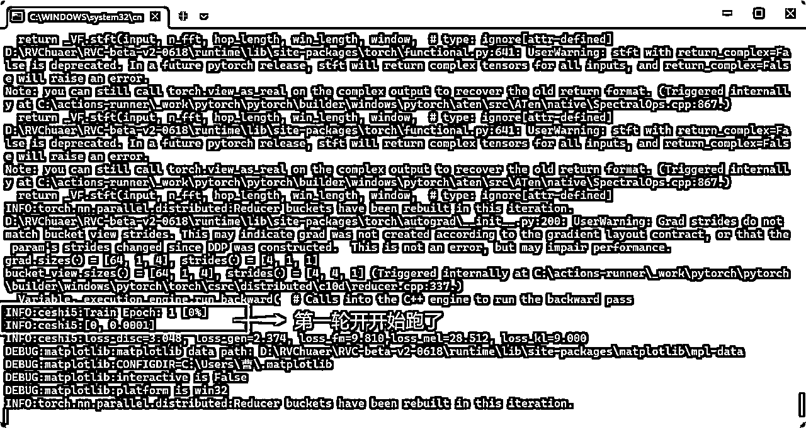
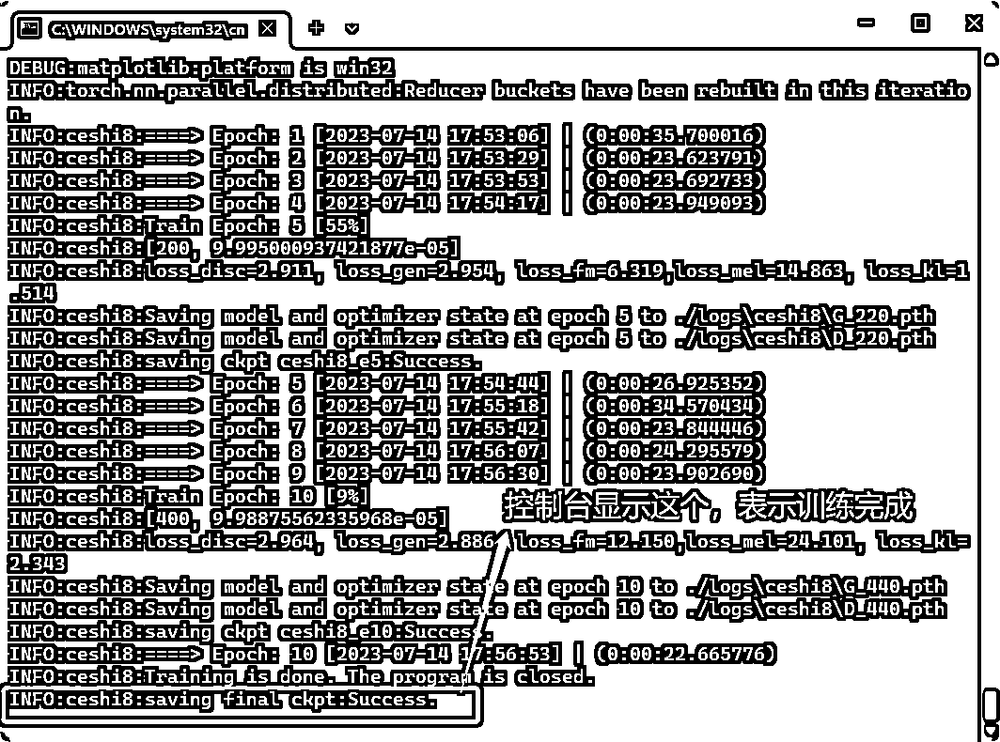
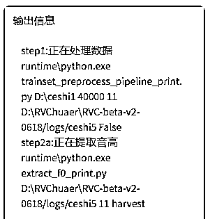
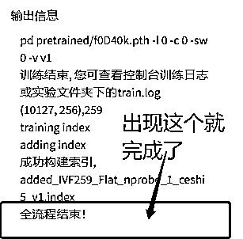
第一步：进入你整合包，解压的文件夹内
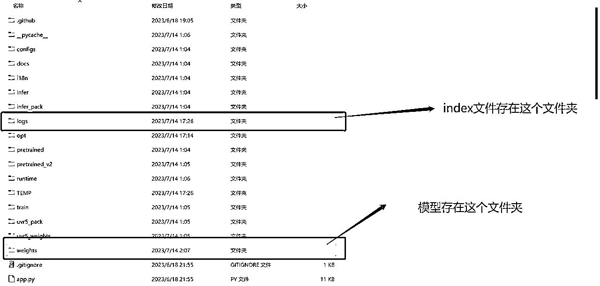
第二步：选择，logs 文件夹，找到 index 文件、npy 文件，保存

第三步：选择 weights 文件夹，找到最终的训练模型，保存下来
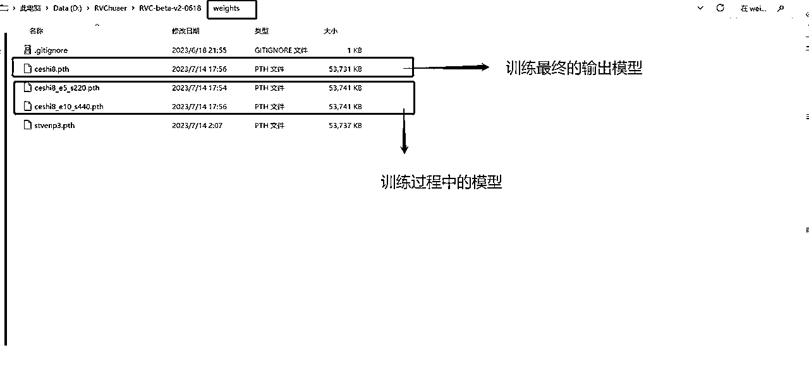
到这里模型训练结束
常见问题：
第一步：选择 path 文件
第二步：选择 index 文件
第三步：按照前面的步骤，设置 RVC 即可
第四步：点击开始音频转换
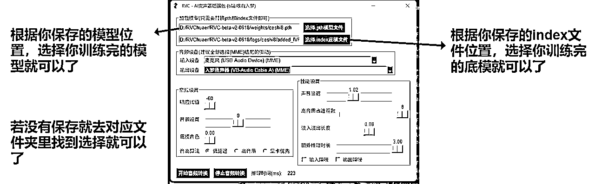
第一步：打开 web 端
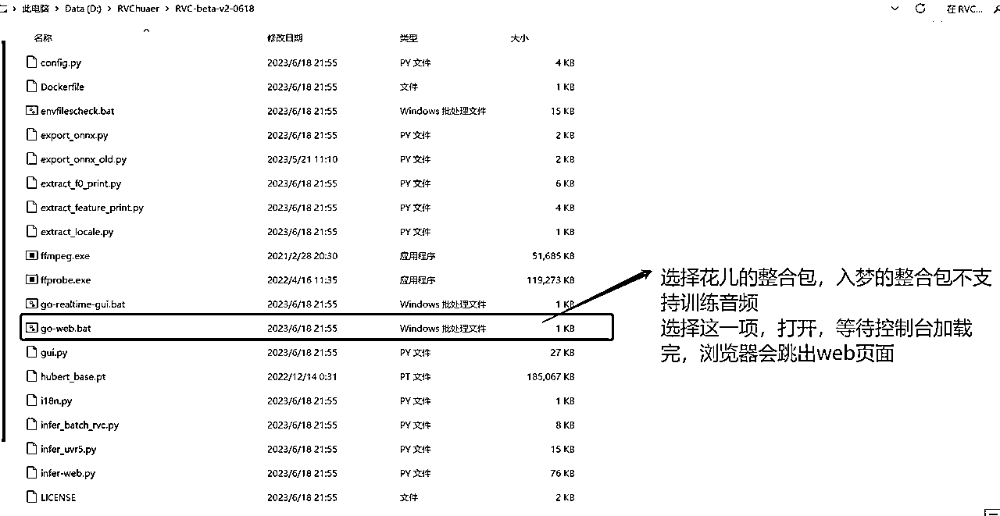
第二步：设置参数
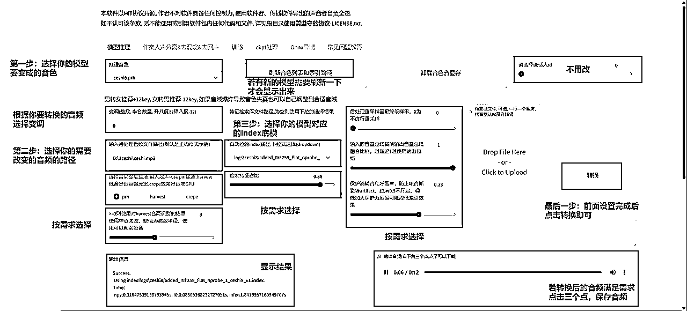
教程到这里就结束了，大家可以去生成属于自己的模型了，可玩性极高！！！
希望这篇文章能帮助到大家！！！
整合包百度网盘链接：
花儿的整合包：链接：https://pan.baidu.com/s/1OUozYzYCSQ8vtqx1YppJmQ?pwd=nn13 提取码：nn13
入梦的整合包：链接：https://pan.baidu.com/s/1wjKVBC3SeOGRlxYBXEQrmw?pwd=2t5x 提取码：2t5x